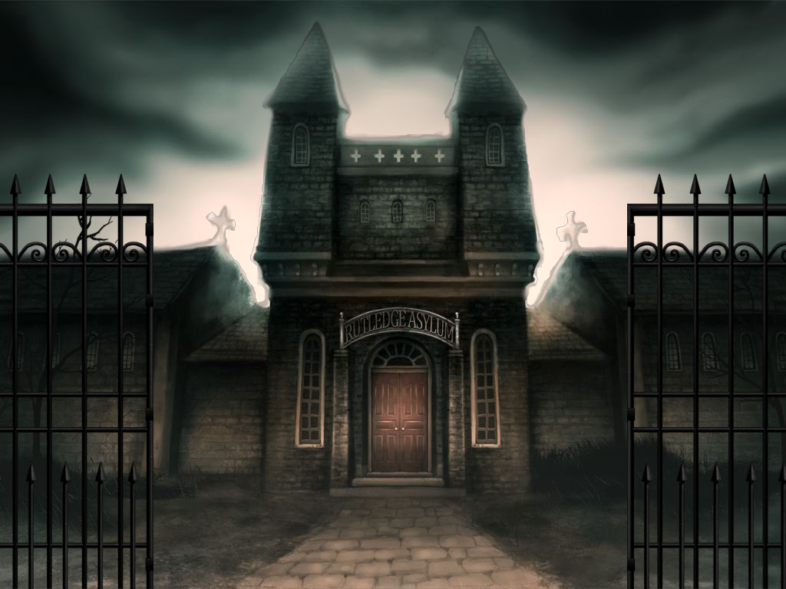

As the clouds clear following a particularly rough drive, the sun shines through the sky revealing that of which you had been looking for. For twelve years ago when you started your current job of paranormal investigation, this was the destination you wanted to explore most. From beyond a chained and rusted gate lay one of the most horrific asylums in recent memory. Its ivory stained windows appear to shine at you as you prepare your equipment and step foot out of your car. The horrific gate stood in front of you as if it was the last line of defence from the countless experiments performed here. To your left was a large sign displaying the name of the asylum, past it forward was the gate itself.
